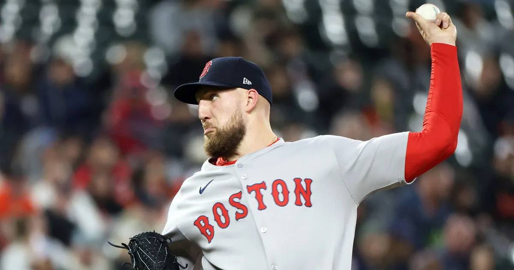

Red Sox want a frontline starter behind Crochet — and a big bat to replace Devers
Craig Breslow made Boston's Winter Meetings shopping list plain: a starter who can pitch at the front of the rotation and start a playoff game behind Garrett Crochet — plus a centerpiece bat to replace the power lost when Rafael Devers was traded.

Disclosure: this post contains affiliate links. I earn a commission on qualifying purchases.
The Red Sox head to the Winter Meetings in Orlando with a short, specific shopping list. Chief baseball officer Craig Breslow said Boston will only add a starting pitcher who can pitch at the front of the rotation and start a playoff game alongside Garrett Crochet — and the club still needs a centerpiece bat to replace the power lost when Rafael Devers was traded to the Giants.
It's a narrower brief than most teams carry into December, and it's deliberate. Boston made the playoffs for the first time since 2021 this year, and Breslow's message is that the roster is a couple of premium pieces away from being World Series-caliber, not a rebuild in need of volume.
What Breslow actually said
Breslow laid out the pitching standard at the GM Meetings in Las Vegas: Boston feels good about its rotation depth from the middle down, and has no interest in adding a fourth or fifth starter.
"Because of the depth that we've built up over the last couple of years, we feel pretty good about just overall starting pitching, maybe No. 3-ish through No. 10-ish," Breslow said. "I don't think we're going to spend a ton of time trying to add a No. 4, No. 5 starter. If we're going to make a starting pitching addition, I think it should be somebody who can pitch at the front of a rotation and start a playoff game for us."
The bar is high because the top of the rotation already is. Crochet, acquired in last winter's blockbuster, fronts the staff, and the group around him was genuinely good in 2026 — Red Sox starters posted a combined 3.92 ERA, eighth-lowest in the majors, with the fifth-lowest walk rate among rotations and the lowest hard-hit rate against any rotation in baseball.
The names on the board
Breslow already made his first strike of the offseason two days before Thanksgiving, acquiring veteran right-hander Sonny Gray in a trade with the Cardinals. Gray, 36, went 18-5 with a 2.72 ERA in 169 innings in 2026. Breslow called that move a starting point, not the finish.
On the trade market, the names to watch are the ones Boston has already circled. Tarik Skubal looks like a pipe dream, but Breslow will monitor the Tigers' situation. Minnesota's Joe Ryan is a known target — Boston made a run at him at the July trade deadline, and those talks could be rekindled. If the Royals make Cole Ragans available, the Sox will be interested.
Free agency offers a deep class as well, including Framber Valdez, Michael King, Zac Gallen and Merrill Kelly. The likely trade chips are in the outfield, where Boston has a logjam: Jarren Duran is the name most often mentioned, with Roman Anthony, Ceddanne Rafaela and Wilyer Abreu also in the mix.
The other hole: replacing Devers
The second item on the list is just as clear. Boston traded Devers to San Francisco on June 15, and the lineup has missed his power ever since. The Winter Meetings primer puts it plainly: the Red Sox need a big bat for the third or fourth spot in the lineup, and the two biggest bats on the free-agent market are Pete Alonso and Kyle Schwarber — only Aaron Judge has hit more home runs than those two sluggers over the past seven seasons.
The expected return to health from Roman Anthony and Wilyer Abreu will help, but a centerpiece run producer is on Breslow's wish list. The young core around them — Anthony, Abreu, Ceddanne Rafaela — plus elite lefties in Crochet and closer Aroldis Chapman, is why Breslow believes the club isn't far off.
"It's early in the offseason," Breslow said. "There are still opportunities that I anticipate materializing. Exactly what they look like, I'm not sure. But we're not going to close off any chance to make the team better."
Watch
Source: Fenway Rundown Episode 465: Takeaways from Craig Breslow and Day 1 of the GM Meetings in Vegas — MassLive / Fenway Rundown (YouTube). Co-hosts Chris Cotillo and Sean McAdam break down the big takeaways from Breslow's GM Meetings session, including the frontline-starter and middle-of-the-order bat priorities.
Sources
• Red Sox Winter Meetings primer — MLB.com
• Breslow: Red Sox looking for front-of-the-rotation starter, middle-of-the-order bat — MLB.com
• What Craig Breslow thinks Payton Tolle's breakout season says about the Red Sox' pipeline — The Boston Globe
Gear up: Fanatics